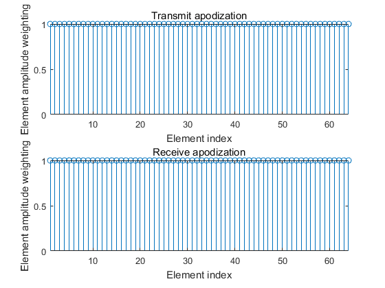
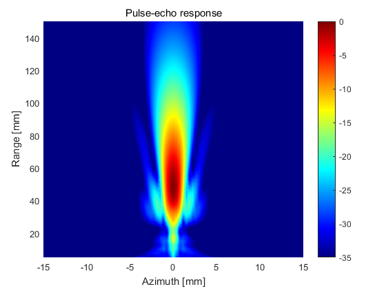
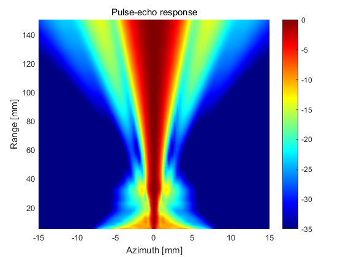

Contents
make sure that field_init has been called
eval('field_init(0)','1;')
*------------------------------------------------------------*
* *
* F I E L D I I *
* *
* Simulator for ultrasound systems *
* *
* Copyright by Joergen Arendt Jensen *
* Version 3.24, May 12, 2014 (Matlab 8.20 version) *
* Web-site: field-ii.dk *
* *
* This is citationware. Note the terms and conditions *
* for use on the web-site at: *
* field-ii.dk/?copyright.html *
* It is illegal to use this program, if the rules in the *
* copyright statement is not followed. *
*------------------------------------------------------------*
DEFINE ARRAY
c = 1540;
f0 = 2.5e6;
fs = 50e6;
lambda = c/f0;
element_height = 13/1000;
pitch = 0.290/1000;
kerf = 0.025/1000;
element_width = pitch-kerf;
Rfocus = 60/1000;
focus = [0 0 60]/1000;
N_elements = 64;
N_sub_x = 5;
N_sub_y = 15;
apodTx = 0;
apodRx = 0;
dynamic_receive_focus = 1;
simType = 'txrx';
GENERATE TRANSMIT AND RECEIVE APERTURE
emit_aperture = xdc_focused_array (N_elements, element_width, element_height, kerf, Rfocus, N_sub_x, N_sub_y, focus);
receive_aperture = xdc_focused_array (N_elements, element_width, element_height, kerf, Rfocus, N_sub_x, N_sub_y, focus);
eval('close(1)','1;')
SET THE IMPULSE RESPONSE AND EXCITATION OF THE TRANSMIT AND RECEIVE APERTURE
t_ir = -2/f0:1/fs:2/f0;
Bw = 0.6;
impulse_response=gauspuls(t_ir,f0,Bw);
set_sampling(fs);
xdc_impulse (emit_aperture, impulse_response);
xdc_impulse (receive_aperture, impulse_response);
Warning: Remember to set all pulses in apertures for the new sampling frequency
SET THE EXCITATION OF THE TRANSMIT APERTURE
ex_periods = 1.5;
t_ex=(0:1/fs:ex_periods/f0);
excitation=square(2*pi*f0*t_ex);
xdc_excitation (emit_aperture, excitation);
DEFINE APODIZATION FOR THE EMIT APERTURE
switch apodTx
case 0
apo_emit = ones(1,N_elements);
case 1
apo_emit = hanning(N_elements)';
case 2
apo_emit = tukeywin(N_elements, 0.3)';
end
xdc_apodization(emit_aperture, 0, apo_emit);
figure(2)
subplot(211)
stem(apo_emit);
title('Transmit apodization');
xlabel('Element index');
ylabel('Element amplitude weighting');
axis tight
ylim([0 1]);

DEFINE APODIZATION FOR THE RECEIVE APERTURE
switch apodRx
case 0
apo_receive = ones(1,N_elements);
case 1
apo_receive = hanning(N_elements)';
case 2
apo_receive = tukeywin(N_elements, 0.3)';
end
xdc_apodization(receive_aperture, 0, apo_receive);
figure(2)
subplot(212)
stem(apo_receive);
title('Receive apodization');
xlabel('Element index');
ylabel('Element amplitude weighting');
axis tight
ylim([0 1]);
DEFINE MEASUREMENT POINTS
measDepthStart = 5/1000;
measDepthEnd = 150/1000;
xStart = -15/1000;
xEnd = 15/1000;
Nmpx = 81;
Nmpz = 59;
mx = linspace(xStart,xEnd,Nmpx)';
my = zeros(Nmpx*Nmpz, 1);
mz = linspace(measDepthStart,measDepthEnd,Nmpz)';
[X,Z] = meshgrid(mx,mz);
measurement_points = [X(:),my,Z(:)];
CALCULATE PRESSURE OR SENSITIVITY
switch simType
case 'tx'
disp('Calculating transmit pressure');
[simData, startTime] = calc_hp(emit_aperture, measurement_points);
figTitle = 'Transmit pressure field';
case 'rx'
disp('Calculating receive sensitivity');
if dynamic_receive_focus
xdc_dynamic_focus(receive_aperture, 0, 0, 0)
end
[simData, startTime] = calc_hp(receive_aperture, measurement_points);
figTitle = 'Receive sensitivity';
case 'txrx'
disp('Calculating pulse-echo response');
if dynamic_receive_focus
xdc_dynamic_focus(receive_aperture, 0, 0, 0)
end
[simData, startTime] = calc_hhp(emit_aperture, receive_aperture, measurement_points);
figTitle = 'Pulse-echo response';
end
Calculating pulse-echo response
3 seconds used for the calculation
PLOT RESULTS
figure(4)
bp = sqrt(mean(simData.^2));
bp = reshape(bp, Nmpz, Nmpx);
bp=bp/max(bp(:));
pcolor(mx*1000, mz*1000, 20*log10(bp));
shading interp
title(figTitle)
xlabel('Azimuth [mm]');
ylabel('Range [mm]');
caxis([-35 0]);
colormap(jet(256));
colorbar

PLOT BP NORMALIZED AT EACH DEPTH
figure(5)
bp= bp./repmat(max(bp')', 1,Nmpx);
pcolor(mx*1000, mz*1000, 20*log10(bp));
shading interp
title(figTitle)
xlabel('Azimuth [mm]');
ylabel('Range [mm]');
caxis([-35 0]);
colormap(jet(256));
colorbar
